AnyPortrait > マニュアル > 可視性プリセット
可視性プリセット
1.3.0
アニメーションを作りながら、オブジェクトが多くなると、効率的な作業をすることが困難である。
したがって操作中に、いくつかのオブジェクトを非表示にしたり、見えるようにする必要があります。
繰り返しこのような作業をする場合は、オブジェクトの表示状態を保存しておき使用すると便利でしょう。
このページでは、作業の効率性を高める「可視性プリセット（Visibility Preset）」について説明します。
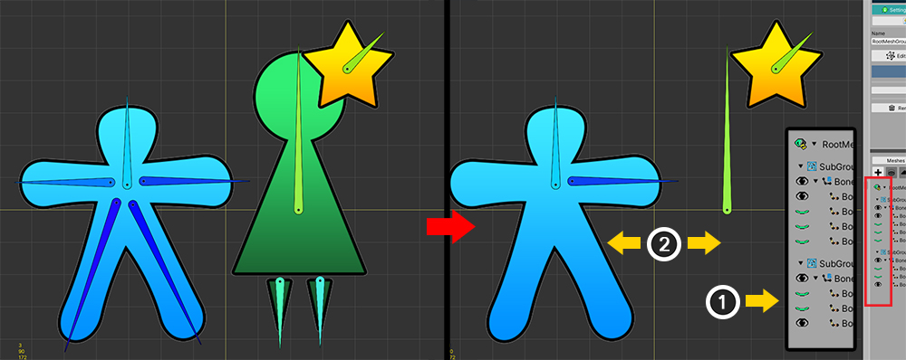
説明のための簡単なキャラクターを構成しました。
一つのメッシュグループに二つの子メッシュグループがあります。
子メッシュグループは、それぞれのメッシュと、ボーンを持っています。
一般的に、必要としていないオブジェクトを非表示にたい場合、
(1) 右Hierarchy画面で黒または緑の目のアイコンを押して、 (2) オブジェクトを一時的に非表示にすることができます。
この方法は、簡単で便利ですが、繰り返しにはやや面倒です。
「可視性プリセット」を利用してみましょう。

(1) 「表示メニュー」を開きます。
(2) 「Visibility Preset > Settings」を選択します。
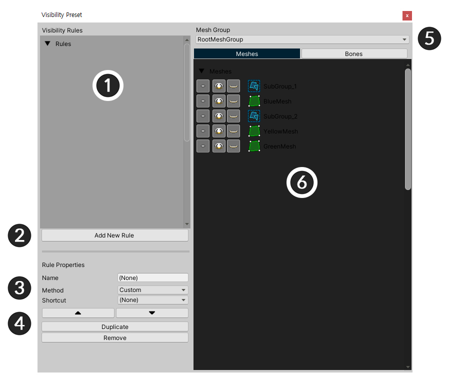
可視性プリセットの設定画面です。
1. ルールリスト : 表示プリセットのルールが表示されます。
2. Add New Rule : 新しいルールを作成します。
3. ルールのプロパティ : 選択したルールの属性です。
4. 順、複製、削除 : リストでのルールの順序を変えたり、複製したり、削除できる機能です。
5. メッシュグループ : 対象となるメッシュグループです。
6. オブジェクトのリスト : Customルールである場合、オブジェクトの出力するかどうかを決定する画面です。
新しいルールを作成
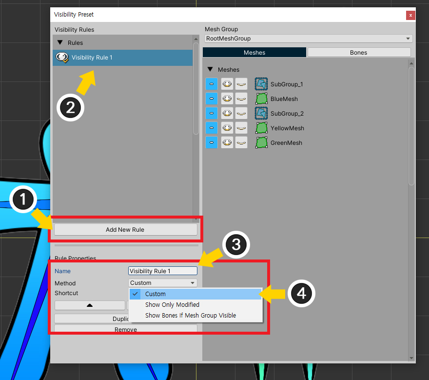
新しいルールを追加してみましょう。
(1) Add New Ruleボタンを押します。
(2) 新たなルールが作成されました。生成されたルールを選択します。
(3) ルールの名前を指定します。
(4) 規則の方式（Method）を「Custom」に選択してみましょう。
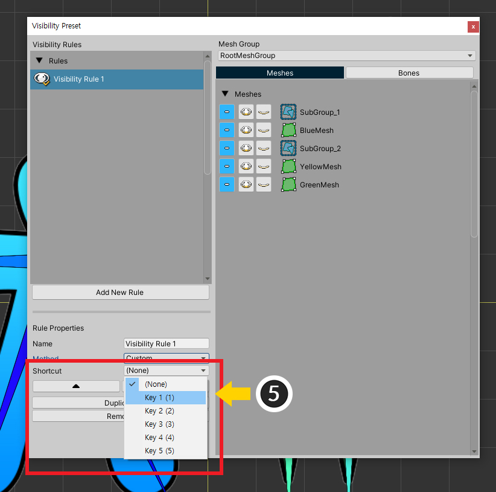
(5) 必要に応じてショートカットを割り当てることができます。ショートカットは、5つの（ 数字キー1〜5 ）の中から選択することができます。
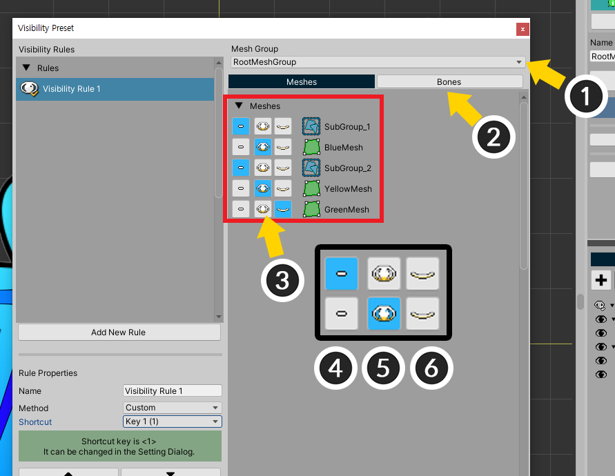
「Custom」方式のルールでは、直接オブジェクトの出力するかどうかを設定することができます。
(1) 対象となるメッシュグループを選択します。
(2) Meshesタブを選択して、メッシュと子メッシュグループの出力するかどうかを設定することができます。
(3) オブジェクトの出力するかどうかを設定します。
(4) オブジェクトがモディファイヤなどによって示しれるかどうかを保持します。
(5) オブジェクトが表示されるように設定します。
(6) オブジェクトが非表示に設定します。
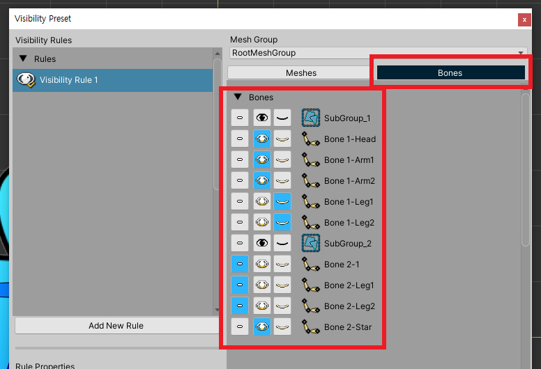
Bonesタブを押して、ボーンの出力するかどうかを設定できます。
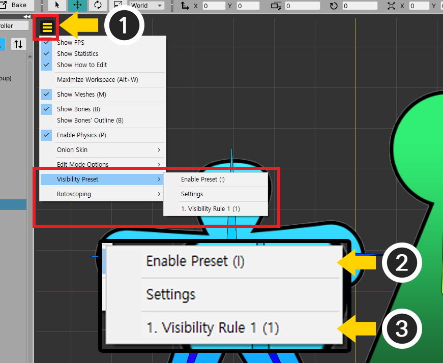
これで、この可視性のプリセットルールを適用してみましょう。
(1) 「表示メニュー」を開きます。
(2) 「Visibility Preset > Enable Preset」（ショートカット I ）を押すと、表示のプリセットが有効になります。
(3) 表示メニューに作成されたルールが表示されます。ルールを変更することができます。
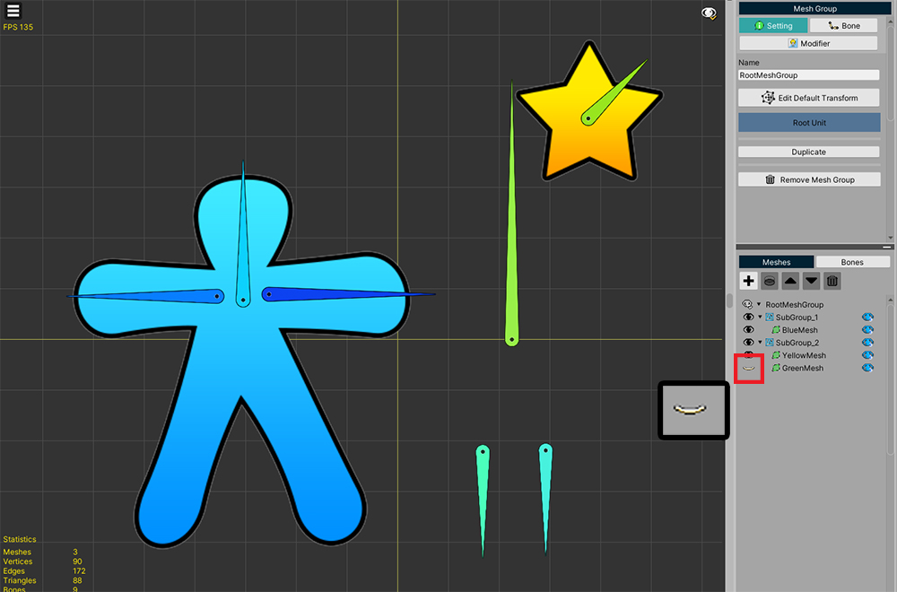
作成した表示プリセットルールが適用されたことを見ることができます。
右Hierarchyで「白目のアイコン」が出力するかどうかを示します。
モディファイヤの対象のみが表示されるように作成
編集中の対象だけワークスペースに表示されるように作成し、その他のオブジェクトを非表示にしたい場合があります。
このような場合のための特別なルールを作成してみましょう。利用しましょう。
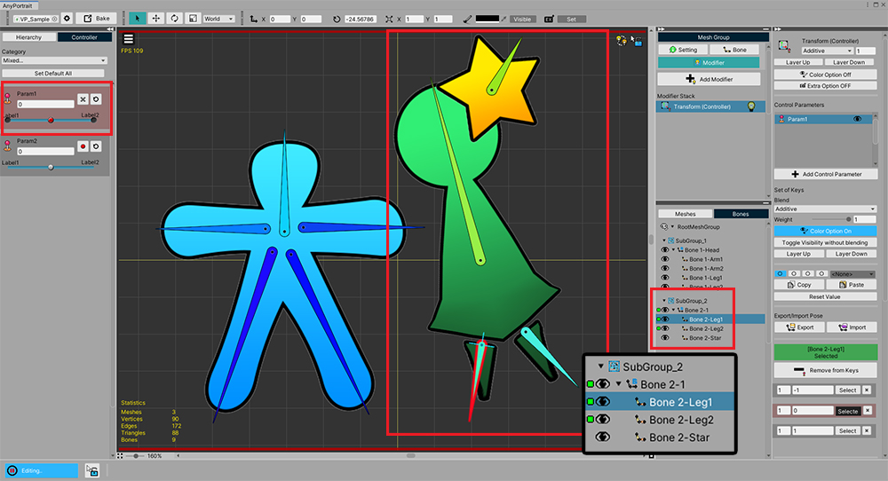
子メッシュグループの右側のグループのボーンだけ動くように作られた画面です。
右のボーンだけモディファイヤに登録され、他のオブジェクトは、モディファイヤに登録されていない状態です。
編集中の右のボーンだけ見られるように作られてみましょう。
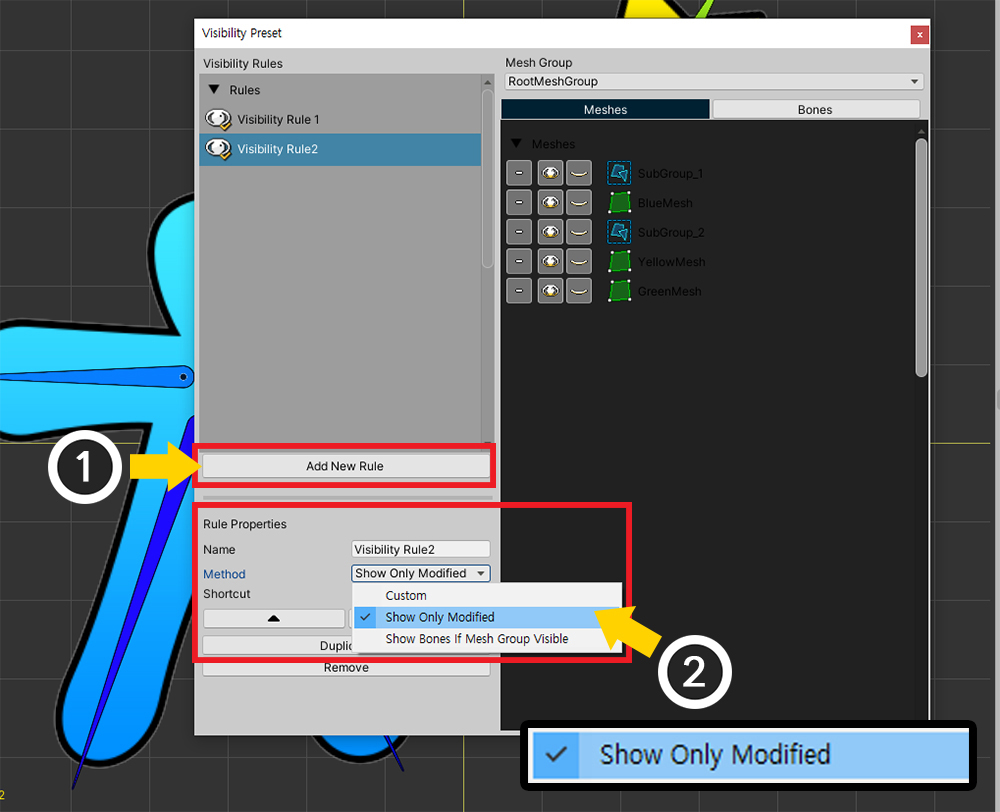
可視プリセット設定画面を開きます。
(1) Add New Ruleボタンを押して、新しいルールを作成します。
(2) 名前を決め、今度は「Method」を「Show Only Modified」に設定します。
この方式は、モディファイヤによってオブジェクトの出力するかどうかが決定されるので、オブジェクトの出力するかどうかをいちいち設定する画面の右側には無効になります。
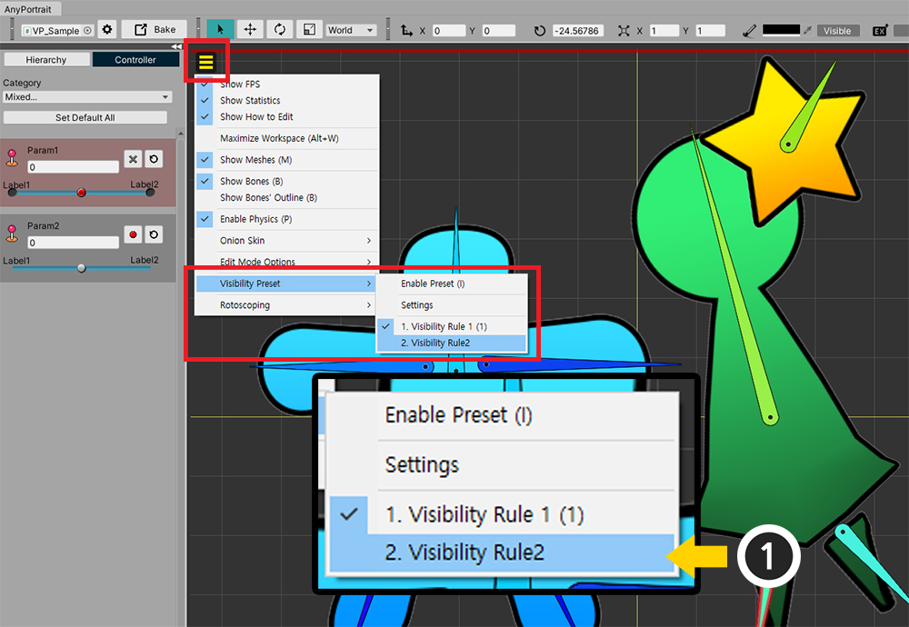
(1) 表示メニューを開き、「第2規則」を選択します。ルールを選択すると、自動的に表示プリセットが有効になります。
（可視プリセットが有効化されない場合、「Enable Preset」をクリックします。）
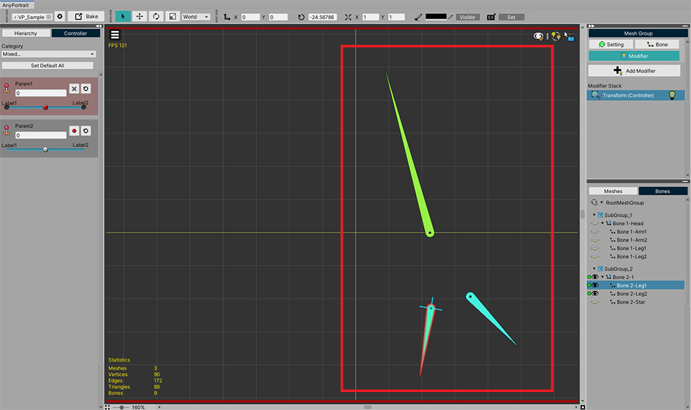
現在モディファイヤで編集しているボーンだけ画面に表示されるのを見ることができます。
骨の可視性を親メッシュグループと同期

このサンプルの左右のボーンは、それぞれ異なる子メッシュグループに属しています。
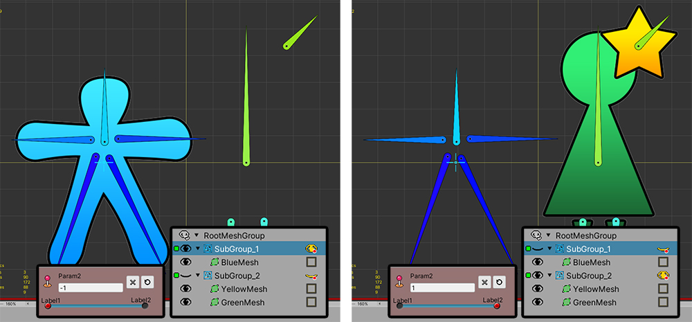
もし上記のようにモディファイヤによって子メッシュグループが非表示になるとき、メッシュも一緒に表示されません。
しかし、ボーンは、子メッシュグループの出力かどうかに関係なく、常にワークスペースに表示されます。
場合によっては、これらのボーンは、画面に表示される必要がありません。
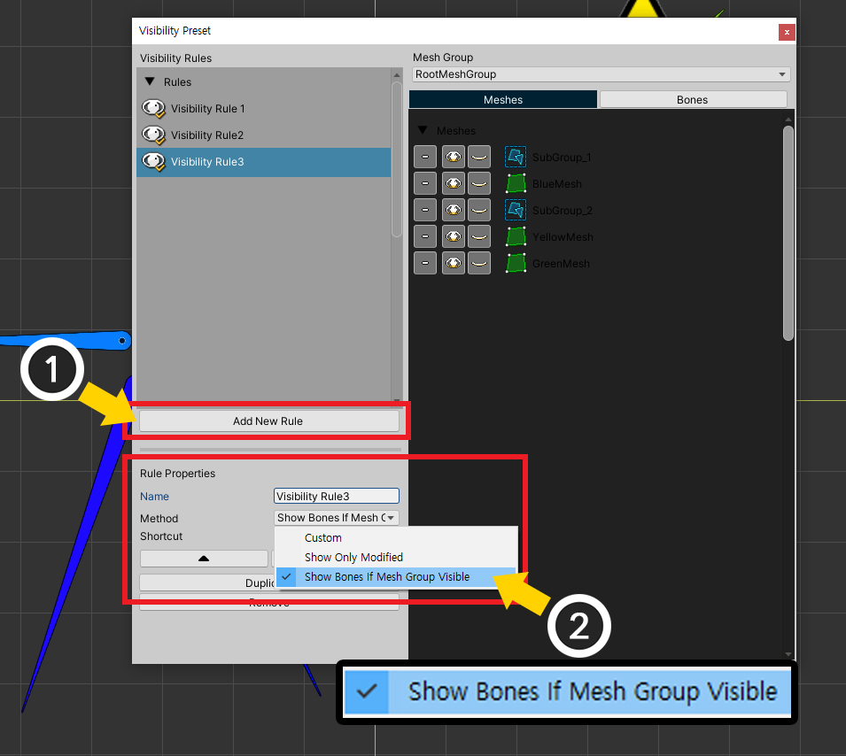
可視プリセット設定画面を開きます。
(1) Add New Ruleボタンを押して、新しいルールを作成します。
(2) 名前を決め、今度は「Method」を「Show Bones If Mesh Group Visible」に設定します。
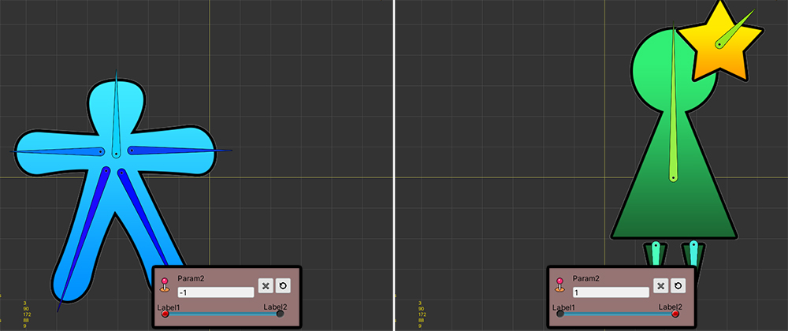
生成された可視性のプリセットルールを適用してみましょう。
子メッシュグループの出力するかどうかに応じてボーンも示したり非表示になります。